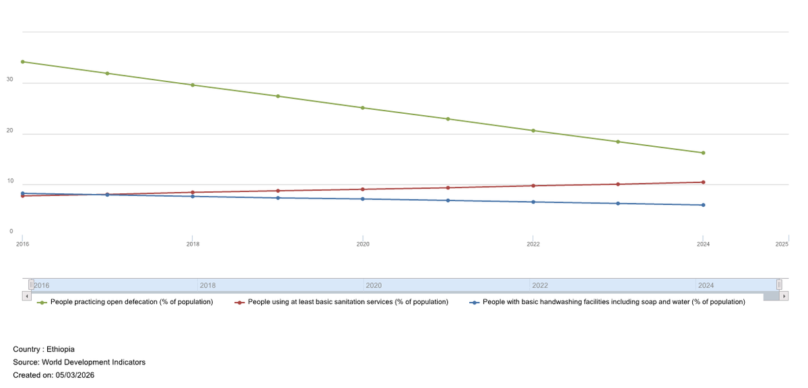
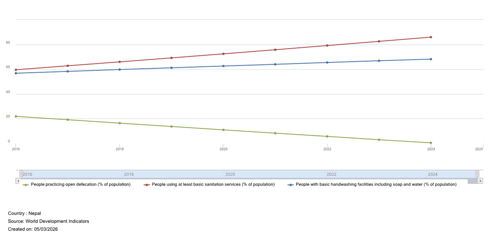
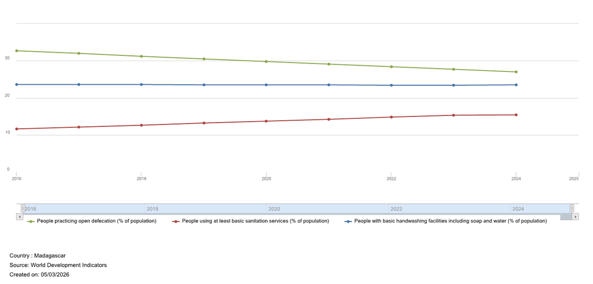
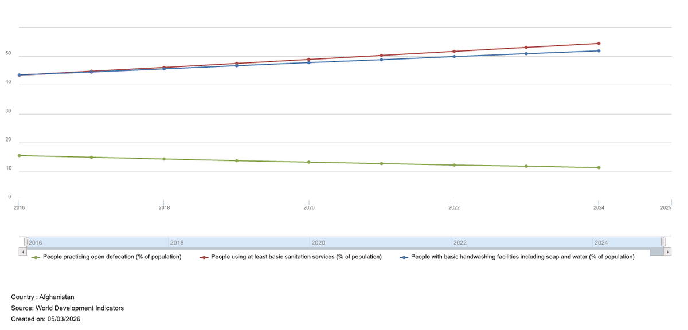
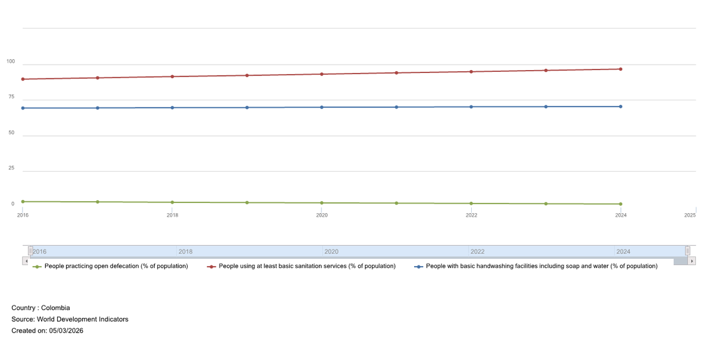
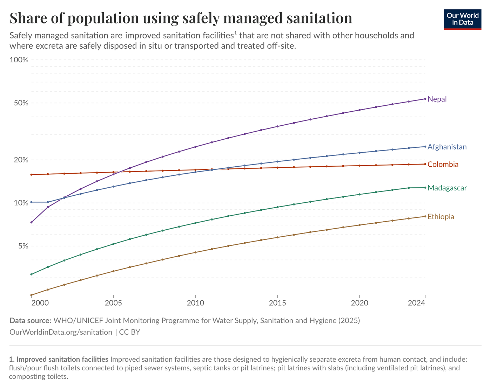
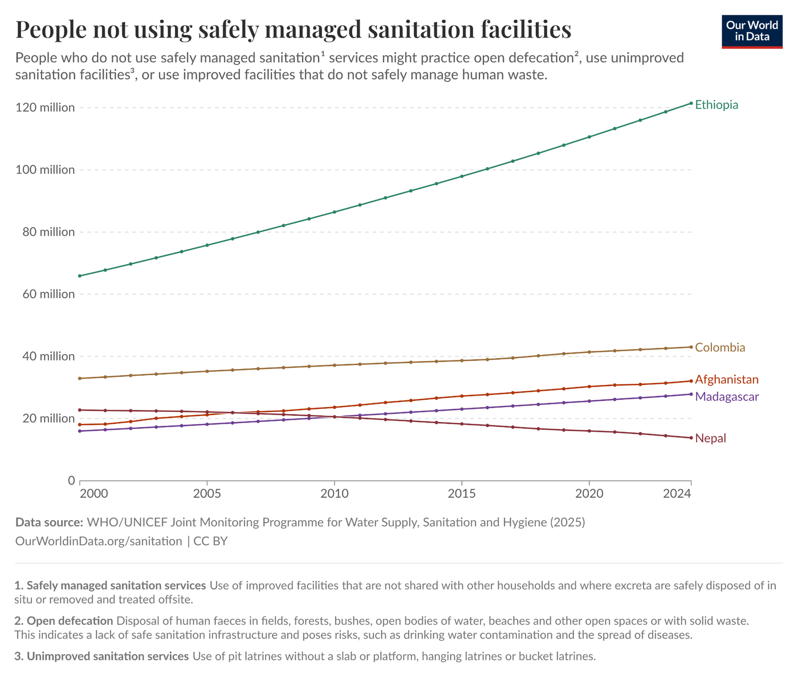

Data Science Project
DAT 250 – Data Science & Society
I used the data science lifecycle on World Bank and UN data to track Sustainable Development Goal 6.2. Tableau dashboards compared sanitation, handwashing, and open-defecation trends across five countries and supported policy recommendations.
Country viewsEach country chart tracks three indicators over time so progress (or gaps) is easy to compare at a glance.





Population-scale views from Our World in Data helped separate percentage gains from absolute need, especially where population growth outpaced infrastructure.


Rate improvements and absolute population need can tell different stories. Clear visuals made those tradeoffs easier to explain to decision makers.